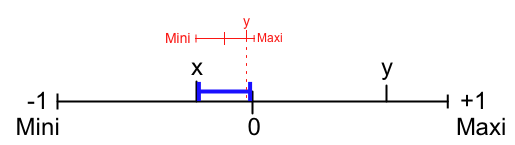

Pushing Away from, Pulling Toward—Blending with the Center and the Ends
It turns out Blend can be used to do a lot of different kinds of things besides averaging two values with a bias. To understand these uses takes a little explanation first.
Blend works like this:
Blend of:
A (FromValue?)
B (ToValue?)
C (HowFar?)
What's really happening when you use Blend is that you start with the first value, A, and move toward B. How far you move from A to B to get your answer is proportional to the value of C. (A, B, and C are all BNumbers, and thus can range from nearly -1 to nearly +1).
This is exactly what we did in the examples above. We started with Kinship between ReactingActor and ThisSubject, and moved in the direction of ReactingActor's PNasty_Nice toward ThisSubject. How far we moved in the direction of PNasty_Nice depended on the value of the bias factor, C. So a more general way of describing what Blend does is to say, "Start at A and head toward B, in proportion to C."
We've already talked about how to use this for two Attributes that you want to average, by assigning your two different factors to A and B, and the bias as C, but Blend has some other interesting uses, as well.
Blending from Minimum to a Value
The trick lies in thinking about Blend in terms of a number line:
Imagine that x and y represent BNumbers that you want to mess with. Here's the trick: the three numbers -1, 0, and +1 are also values that can be used with Blend. (Actually, this is not technically true. In BNumber arithmetic, the values -1.0000 and +1.0000 are not allowed. Instead, you have to use -0.9999 or +0.9999. To make this easier, we have created created two special constants, Maxi and Mini, that you can find in the Arithmetic menu, that represent these two extremes.)
Consider, for example, this use of Blend:
Blend of:
Mini
x
y
Here's how to visualize it:
The main number line is shown in black. The blue line marks the range inside which the Blend result must fall, because Blend always produces a number between its first argument and the its second argument (between Mini and x, in this example). Now think of the blue line as the number line that y sits on. We have drawn an image in red of y's numberline superposed over the blue line. (In effect, we have taken the full black number line and squeezed it down to fit it over the blue line.) Now y marks the result given by Blend. To express the idea verbally: Blend pushes x towards Mini in proportion to y.
Just for fun (yeah, right: math is fun...), let's reverse it, like so:
Blend of:
Mini
y
x
Can you guess what the result will be? Here's the visualization:
In this case, Blend pushes y towards Mini in proportion to x.
An example of how you might use this construction of Blend is if you wanted something to be very unlikely to happen except under certain conditions. Suppose you are doing a psychological drama in which a troubled soul has to resist listening to his inner demons and taking revenge on someone who insulted him. An Inclination script for the Option plot revenge might look like this:
This script pushes ReactingActor's Inclination to plot revenge toward the minimum value, starting at their Sane_Psychotic value, in proportion to their level of fear or anger. That is, the highest possible value you will get is the value of ReactingActor's level of insanity, if they are in a state of unbridled outrage. Here are two different scenarios.
(1) With this script, a very sane person (say, with a Sane_Psychotic ActorTrait of -0.25 or less) would be very unlikely to plot revenge no matter how angry they are. For instance, a Fearful_Angry mood of +0.8 would result in an Inclination of -0.32—a pretty low number.
(2) On the other hand, if Jack the Ripper, with a Sane_Psychotic value of +0.9, got that angry, his Inclination to plot revenge would be highly likely (an Inclination of 0.71). I wouldn't want to hang around such a person!
To test this, go to the Actor Editor and create a new Actor Core Trait called "Sane_Psychotic." Then go to the Verb Editor and create an Inclination script with the following construction:
Blend of:
Mini
Sane_Psychotic of:
ReactingActor
Fearful_Angry of:
ReactingActor
Now click on Script > Scriptalyzer on the upper right of the scripting pane. Drag the slider for "Mini" to the lowest possible point on its slider. Create the Jack the Ripper example provided in Scenario (2) above, with +0.90 for Sane_Psychotic of ReactingActor, and +0.80 for his Fearful_Angry mood. Do you get the same answer? (Remember, the final result of the script calculation always shows up in red on the top number line.)
Here is what it should look like if you do the example above, with an angry Jack the Ripper:
Then try out other values for Sane_Psychotic and Fearful_Angry, and see if the results you get are what you would expect them to be. Envision a character and choose a Sane_Psychotic value appropriate for his or her personality. Then set the second term to that value, and see what kind of Inclination you would get if they were neither fearful nor angry (which would correspond to a BNumber of 0.0, right in the middle of the scale.
Next, try changing their mood by moving the third slider bar into the negative (thus making them more fearful) or positive (making them more angry), and watch what happens to their Inclination.
Blending from Maximum to a Value
OK, now let's try something else. What if we use Maxi in place of Mini in the above example:
Blend of:
Maxi
y
x
Here's the visualization:
Or, to express it verbally, Blend starts at Maxi and moves towards x in proportion to y.
You would use this construction if you want to stack the deck in favor of making something likely to happen, but you want to mediate it with key personality, relationship, or other Attributes that might make a difference in rare cases. For instance, suppose you are creating a mystery storyworld and an Actor has to decide whether to deceive the Protagonist (ThisSubject).
Let's assume ReactingActor, on the basis of turnabout is fair play, bases their decision on how deceitful ThisSubject appears to be (note that this would be the inverse of PFalse_Honest), mediated by their confidence in ThisSubject's perceived level of honesty.
Let's make it so that the ReactingActor is predisposed toward deceiving the detective (perhaps they are protecting a lover or family member, and don't trust the detective to play fair). They base their decision how deceitful ThisSubject appears to be (note that this would be the inverse of PFalse_Honest), mediated by their confidence in their assessment of ThisSubject's deceitfulness.
The script is saying this: if ReactingActor trusts ThisSubject a lot, and has a high degree of confidence in that assessment, ReactingActor will be unlikely to deceive ThisSubject. For instance, if ReactingActor perceives ThisSubject's honesty as a strong 0.4, and a very high degree of confidence in that assessment, say a CFalse_Honest of 0.8, their likelihood to deceive ThisSubject is pretty low: -0.25. Otherwise, ReactingActor is very likely to deceive ThisSubject.
As with the Jack-The-Ripper Mini-Blend example above, start with a Blend script that looks like this:
Set the first slider to the maximum possible amount, and move the second and third sliders in accordance with an Actor's perception of another's deceptiveness, and their confidence in that evaluation, and see if you get the final result you expect for in Inclination. Does the Inclination to deceive go up and down as you would expect it?
Blending Between A Value and Zero
Now let's try another variation:
Blend of:
0.0
x
y

Blend starts at 0.0 and moves toward x in proportion to y.
The simple rule is this:
Blend starts with the first argument and moves toward the second argument in
proportion to the third argument.
Blending Between Two Values, Using Zero
Here's a variation on Blend that is used in BoP2K: We have a country evaluating a deal. it has to evaluate two factors: the value of what it's getting, and the value of what it's giving. The value of what it's getting depends on two factors: how much it desires that outcome (PUndesirable_Desirable), and the likelihood that it will happen (PInfluence). So the Script looks like this:
There are three arguments to the Blend Operator. The first argument represents how much the ReactingActor desires This5Prop. However, the deal doesn't actually deliver This5Prop—it means only that ThisSubject will attempt to induce the Owner of This5Prop to deliver it. So we must take into account the likelihood that ThisSubject will succeed in his attempt. That depends upon how much influence that ThisSubject has over the Owner of This5Prop.
Now, if ReactingActor were 100% certain that he'd get This5Prop, then the net desirability would be the desirability of This5Prop—but in fact the chances of getting This5Prop are less than 100%, so the net desirability is less than the actual desirability of This5Prop. How much less? That depends on the probability of success. If the probability of success is zero, then the net desirability is zero—ReactingActor won't get anything out of the deal. So we Blend PUndesirable_Desirable with 0.0, and the BlendingRatio will be the likelihood of success (PInfluence).
Remember, Blend starts with the first argument, and moves from the second argument towards it, in proportion to the third argument. Hence, the result will move from PUndesirable_Desirable toward 0.0 in proportion to PInfluence.